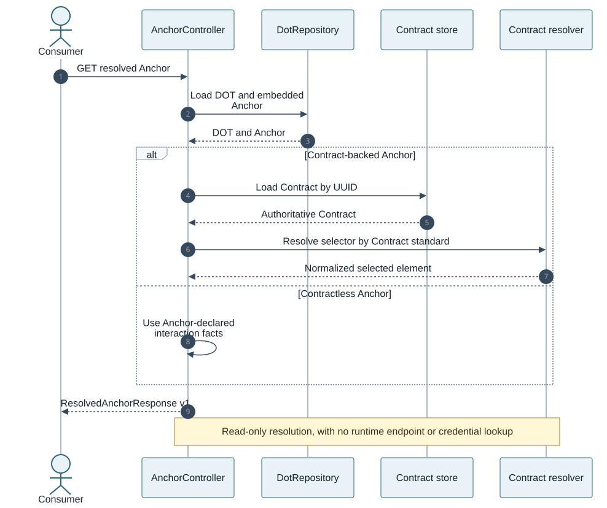

DOT-Registry service
DOT-Registry is the Spring Boot service around the DOT domain model. Its
current public surface is deliberately read-only: consumers can discover
Anchors, retrieve Contracts, and resolve selected Contract elements without
copying derived facts into the stored DOT.
Responsibilities
-
Persist
Dot,Skill, andContractroot documents in MongoDB. -
Resolve embedded Anchor references within a stored DOT.
-
Load the referenced Contract document.
-
Parse the selected OpenAPI, AsyncAPI, Protobuf, or GraphQL element.
-
Return a stable normalized response for composer and tooling consumers.
-
Return stable machine-readable errors for missing or invalid data.
The Registry does not allocate runtime endpoints, resolve credentials, deploy workloads, or persist composition wires.
Run locally
Start MongoDB on localhost:27017, then run:
mvn -pl DOT-Registry spring-boot:runThe application uses database dots. Automatic index creation is enabled and
UUIDs use the MongoDB standard representation.
Spring Boot Actuator is included. Availability and exposure of individual Actuator routes follow the active Spring Boot configuration.
Read API
| Route | Result |
|---|---|
|
All logical Anchors embedded in the DOT. |
|
One logical Anchor. |
|
All Anchors with normalized Contract metadata and selected elements. |
|
One resolved Anchor. |
|
The complete authoritative Contract, including its payload. |
Prefer a resolved Anchor route when making composition decisions. Use the Contract route only when the complete authoritative payload is required.

Resolved Anchor response
{
"apiVersion": "1",
"anchor": {
"id": "a0000000-0000-4000-8000-000000000001",
"name": "submit-alert-http",
"role": "PROVIDES",
"semanticTypes": ["urn:mare:security:alert"],
"contract": {
"id": "11111111-1111-4111-8111-111111111111",
"selector": "#/paths/~1alerts/post"
}
},
"contract": {
"id": "11111111-1111-4111-8111-111111111111",
"name": "alert-http-api",
"version": "1.0.0",
"standard": "OPENAPI",
"format": "YAML"
},
"selectedElement": {
"selector": "#/paths/~1alerts/post",
"identifier": "submitAlert",
"interaction": "REQUEST_RESPONSE",
"protocols": ["HTTPS"],
"mediaTypes": ["application/json"],
"inputSchemas": ["#/components/schemas/Alert"],
"outputSchemas": ["#/components/schemas/Receipt"],
"securitySchemes": ["oauth2"]
}
}apiVersion versions the normalized response independently of the DOT version.
The nested Contract intentionally excludes its potentially large payload. For a
contractless Anchor, contract and selectedElement are null. A dangling
Contract reference is an error and is never presented as a contractless Anchor.
Contract resolution
| Standard | Selector | Normalized facts |
|---|---|---|
OpenAPI |
RFC 6901 URI-fragment JSON Pointer to an Operation Object |
|
AsyncAPI |
RFC 6901 URI-fragment JSON Pointer to an Operation Object |
|
Protobuf |
Fully qualified service method |
Unary, client-streaming, server-streaming, or bidirectional-streaming interaction; gRPC protocol and request/response message types |
GraphQL |
Root-field schema coordinate |
|
OpenAPI and AsyncAPI payloads may be JSON or YAML. Protobuf payloads are .proto
source, and GraphQL payloads are SDL. Local $ref values used by the supported
resolvers are normalized from the authoritative document; unsupported or
invalid constructs fail with an explicit error.
Error contract
Errors use a stable two-field JSON body:
{
"code": "SELECTOR_NOT_FOUND",
"message": "selector does not identify an element in the contract: #/paths/~1missing/get"
}| Codes | HTTP status |
|---|---|
|
|
|
|
Consumers should branch on code; message is diagnostic text.
Compatibility evaluation
The Registry contains a conservative three-state evaluator for resolved Anchor pairs:
-
COMPATIBLE— every currently evaluated rule is satisfied; -
INCOMPATIBLE— at least one deterministic mismatch exists; and -
UNKNOWN— no mismatch was proved, but required evidence or an external evaluator is missing.
It evaluates role, semantic type, interaction, protocol, media type, schema
identity, and security requirements. Exact schema identifiers prove
compatibility only when both Anchors use the same authoritative Contract UUID.
Cross-Contract structural comparison, ontology reasoning, transformations, and
deployment-environment security satisfaction remain UNKNOWN.
The evaluator is currently an internal service; there is no public compatibility route. This avoids publishing a request identity and policy contract before those boundaries are stable.
Runtime handoff
Registry resolution stops at logical facts. AnchorBinding maps an Anchor UUID
to a DeploymentService and named ServicePort; deployment tooling then maps
that service/port to a live endpoint.
Hosts, allocated ports, broker addresses, credentials, certificates, network slices, and current policy state remain deployment-instance data and are never copied into a logical Anchor.
Persistence
| Context | MongoDB database |
|---|---|
Application |
|
Integration tests |
|
Both configurations set spring.mongodb.representation.uuid: standard.
Automatic index creation enforces the unique Skill.name index and unique
(name, version) indexes for DOTs and Contracts.
Spring Data document references do not cascade. Tests and clients must persist referenced Skills and Contracts before saving a DOT that references them.
Build and test
Registry tests use a real MongoDB instance; no embedded database is configured.
cd DOT-Registry
./mvnw testRepository integration tests clear their collections before and after each test class. Resolver and controller tests cover supported standards, malformed payloads, missing selectors, normalized responses, and error mappings.
DOT-Registry/pom.xml intentionally overrides annotation processors to include
both Lombok and spring-boot-configuration-processor; both are required.
Operational boundary
The current service is suitable as a reference read API and persistence layer. Production deployment still requires environment-specific authentication and authorization, parser/input limits, audit and metrics policy, availability, backup/restore, and API compatibility governance.